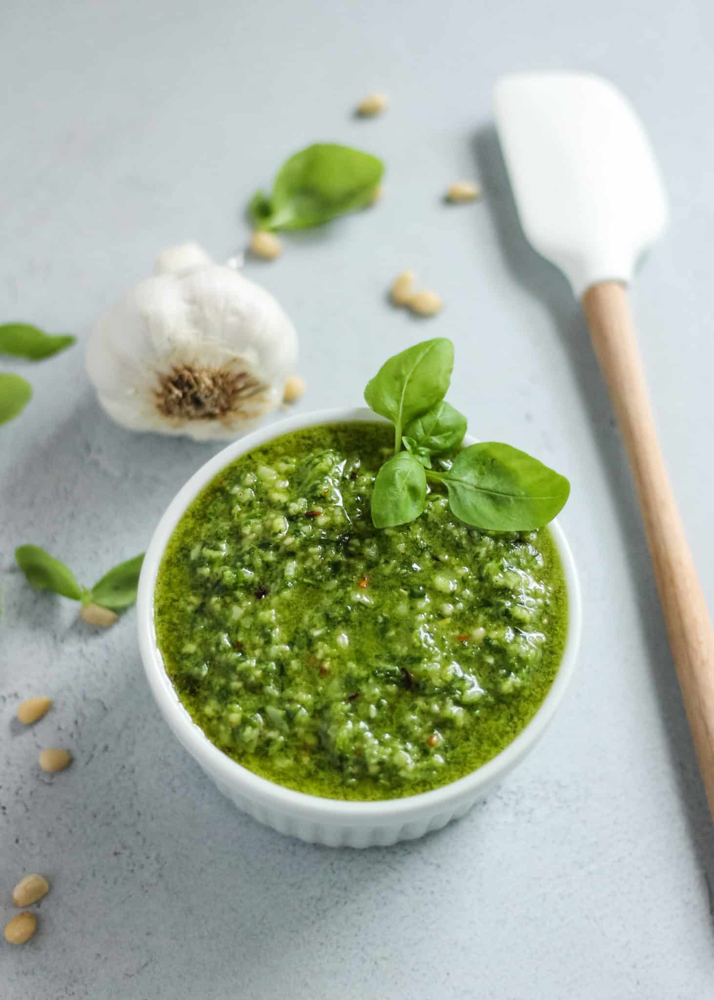

Pesto Sauce Recipe

Description
Italian sauce.
Ingredients:
- 1 bunch fresh basil leaves
- 1 cup Parmesan cheese
- 2 ounces cream cheese
- ¼ cup olive oil
- 1 tablespoon butter
- 1 large clove garlic, minced
Steps:
- Bring a large pot of water to a boil.
- Add the basil leaves and cook until tender and bright green, 2 to 5 minutes.
- Drain basil, reserving 2 tablespoons of the basil water.
- Blend basil, 2 tablespoons basil water, Parmesan cheese, cream cheese, olive oil, butter, and garlic in a blender until smooth and creamy.